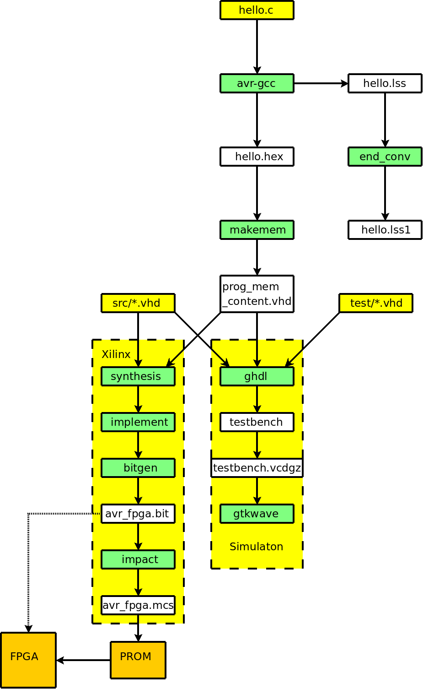

| Previous Lesson | Table of Content | Next Lesson |
|---|
In this lesson we will learn how to set up a toolchain on a Linux box. We will not describe, however, how the tools are downloaded and installed. The installation of a tools is normally described in the documentation that comes with the tool.
Places from where tools can be downloaded were already presented in the first lecture.
The following figure gives an overview of the entire flow. We show source files in yellow, temporary files in white and tools in green.

We start with a C source file hello.c. This file is compiled with avr-gcc, a gcc variant that generates opcodes for the AVR CPU. The compilation produces 2 output files: hello.lss and hello.hex.
hello.lss is a listing file and may optionally be post-processed by the tool end_conv which converts the little-endian format of hello.lss into a slightly different format that is more in line with the way gtkwave shows the hex values of signals.
The main purpose of the compilation is to produce hello.hex. hello.hex contains the opcodes produced from hello.c in Intel-Hex format.
hello.hex is then fed into make_mem. make_mem is a tool that converts the Intel-Hex format into VHDL constants. These constants are used to initialize the block RAM modules of the program memory. The output of make_mem is memory_content.vhd (which, as you certainly remember, was included by prog_mem.vhd).
At this point, there are two possible ways to proceed. You could do a functional simulation or a timing simulation.
Initially you will be concerned mostly with the functional simulation. On this branch you debug the VHDL code until it looks functionally OK. In order to perform the functional simulation, you need 3 sorts of VHDL files:
All these VHDL files are then processed by ghdl. ghdl produces a single output file testbench in directory simu. testbench is an executable file. testbench is then run in order to produces a gzip'ed vcd (value change dump) file called testbench.vcdgz.
The last step is visualize testbench.vcdgz by means of the tool gtkwave. gtkwave is similar to the ModelSim provided by Xilinx, but it has two advantages: it does not bother the user with licence installations (even in the "free" versions provided by Xilinx) and it runs under Linux. There are actually more advantages of the ghdl/gtkwave combination; after having used both tools in the past the author definitely prefers ghdl/gtkwave.
An example output of the functional simulation that shows the operation our CPU:
We can compare the CPU signals shown with the assembler code being executed. The CPU is executing inside the C function uart_puts():
app/hello.lss1
After the CPU functions correctly, the design can be fed into the Xilinx toolchain. This toolchain is better described in the documentation that comes with it, so we don't go to too much detail here.
We used Webpack 10.1, which can be downloaded from Xilinx.
The first step is to set up a project in the ISE project navigator with the proper target device. Then the VHDL files in the src directory are added to the project. Next the Synthesize and Implementation steps of the design flow are run.
If this is successful, then we can generate a programming file. There are a number of ways to configure Xilinx FPGAs, and the type of programming file needed depends on the particular way of configuring the device. The board we used for testing the CPU had a serial PROM and therefore we generated a programming file for the serial PROM on the board. The FPGA would then load from the PROM on start-up. Other ways of configuring the device are via JTAG, which is also quite handy during debugging.
The entire build process is a little lengthy (and the devil is known to hide in the details). We therefore go through the entire design flow in a step-by-step fashion.
1 #include "assert.h"
2 #include "stdio.h"
3 #include "stdint.h"
4 #include "string.h"
5
6 uint8_t buffer[0x10000]; // 64 k is max. for Intel hex.
7 uint8_t slice [0x10000]; // 16 k is max. for Xilinx bram
8
9 //-----------------------------------------------------------------------------
10 //
11 // get a byte (from cp pointing into Intel hex file).
12 //
13 uint32_t
14 get_byte(const char * cp)
15 {
16 uint32_t value;
17 const char cc[3] = { cp[0], cp[1], 0 };
18 const int cnt = sscanf(cc, "%X", &value);
19 assert(cnt == 1);
20 return value;
21 }
22 //-----------------------------------------------------------------------------
23 //
24 // read an Intel hex file into buffer
25 void
26 read_file(FILE * in)
27 {
28 memset(buffer, 0xFF, sizeof(buffer));
29 char line[200];
30 for (;;)
31 {
32 const char * s = fgets(line, sizeof(line) - 2, in);
33 if (s == 0) return;
34 assert(*s++ == ':');
35 const uint32_t len = get_byte(s);
36 const uint32_t ah = get_byte(s + 2);
37 const uint32_t al = get_byte(s + 4);
38 const uint32_t rectype = get_byte(s + 6);
39 const char * d = s + 8;
40 const uint32_t addr = ah << 8 | al;
41
42 uint32_t csum = len + ah + al + rectype;
43 assert((addr + len) <= 0x10000);
44 for (uint32_t l = 0; l < len; ++l)
45 {
46 const uint32_t byte = get_byte(d);
47 d += 2;
48 buffer[addr + l] = byte;
49 csum += byte;
50 }
51
52 csum = 0xFF & -csum;
53 const uint32_t sum = get_byte(d);
54 assert(sum == csum);
55 }
56 }
57 //-----------------------------------------------------------------------------
58 //
59 // copy a slice from buffer into slice.
60 // buffer is organized as 32-bit x items.
61 // slice is organized as bits x items.
62 //
63 void copy_slice(uint32_t slice_num, uint32_t port_bits, uint32_t mem_bits)
64 {
65 assert(mem_bits == 0x1000 || mem_bits == 0x4000);
66
67 const uint32_t items = mem_bits/port_bits;
68 const uint32_t mask = (1 << port_bits) - 1;
69 const uint8_t * src = buffer;
70
71 memset(slice, 0, sizeof(slice));
72
73 for (uint32_t i = 0; i < items; ++i)
74 {
75 // read one 32-bit value;
76 const uint32_t v0 = *src++;
77 const uint32_t v1 = *src++;
78 const uint32_t v2 = *src++;
79 const uint32_t v3 = *src++;
80 const uint32_t v = (v3 << 24 |
81 v2 << 16 |
82 v1 << 8 |
83 v0 ) >> (slice_num*port_bits) & mask;
84
85 if (port_bits == 16)
86 {
87 assert(v < 0x10000);
88 slice[2*i] = v;
89 slice[2*i + 1] = v >> 8;
90 }
91 else if (port_bits == 8)
92 {
93 assert(v < 0x100);
94 slice[i] = v;
95 }
96 else if (port_bits == 4)
97 {
98 assert(v < 0x10);
99 slice[i >> 1] |= v << (4*(i & 1));
100 }
101 else if (port_bits == 2)
102 {
103 assert(v < 0x04);
104 slice[i >> 2] |= v << (2*(i & 3));
105 }
106 else if (port_bits == 1)
107 {
108 assert(v < 0x02);
109 slice[i >> 3] |= v << ((i & 7));
110 }
111 else assert(0 && "Bad aspect ratio.");
112 }
113 }
114 //-----------------------------------------------------------------------------
115 //
116 // write one initialization vector
117 //
118 void
119 write_vector(FILE * out, uint32_t mem, uint32_t vec, const uint8_t * data)
120 {
121 fprintf(out, "constant p%u_%2.2X : BIT_VECTOR := X\"", mem, vec);
122 for (int32_t d = 31; d >= 0; --d)
123 fprintf(out, "%2.2X", data[d]);
124
125 fprintf(out, "\";\r\n");
126 }
127 //-----------------------------------------------------------------------------
128 //
129 // write one memory
130 //
131 void
132 write_mem(FILE * out, uint32_t mem, uint32_t bytes)
133 {
134 fprintf(out, "-- content of p_%u --------------------------------------"
135 "--------------------------------------------\r\n", mem);
136
137 const uint8_t * src = slice;
138 for (uint32_t v = 0; v < bytes/32; ++v)
139 write_vector(out, mem, v, src + 32*v);
140
141 fprintf(out, "\r\n");
142 }
143 //-----------------------------------------------------------------------------
144 //
145 // write the entire memory_contents file.
146 //
147 void
148 write_file(FILE * out, uint32_t bits)
149 {
150 fprintf(out,
151 "\r\n"
152 "library IEEE;\r\n"
153 "use IEEE.STD_LOGIC_1164.all;\r\n"
154 "\r\n"
155 "package prog_mem_content is\r\n"
156 "\r\n");
157
158 const uint32_t mems = 16/bits;
159
160 for (uint32_t m = 0; m < 2*mems; ++m)
161 {
162 copy_slice(m, bits, 0x1000);
163 write_mem(out, m, 0x200);
164 }
165
166 fprintf(out,
167 "end prog_mem_content;\r\n"
168 "\r\n");
169 }
170 //-----------------------------------------------------------------------------
171 int
172 main(int argc, char * argv[])
173 {
174 uint32_t bits = 4;
175 const char * prog = *argv++; --argc;
176
177 if (argc && !strcmp(*argv, "-1")) { bits = 1; ++argv; --argc; }
178 else if (argc && !strcmp(*argv, "-2")) { bits = 2; ++argv; --argc; }
179 else if (argc && !strcmp(*argv, "-4")) { bits = 4; ++argv; --argc; }
180 else if (argc && !strcmp(*argv, "-8")) { bits = 8; ++argv; --argc; }
181 else if (argc && !strcmp(*argv, "-16")) { bits = 16; ++argv; --argc; }
182
183 const char * hex_file = 0;
184 const char * vhdl_file = 0;
185
186 if (argc) { hex_file = *argv++; --argc; }
187 if (argc) { vhdl_file = *argv++; --argc; }
188 assert(argc == 0);
189
190 FILE * in = stdin;
191 if (hex_file) in = fopen(hex_file, "r");
192 assert(in);
193 read_file(in);
194 fclose(in);
195
196 FILE * out = stdout;
197 if (vhdl_file) out = fopen(vhdl_file, "w");
198 write_file(out, bits);
199 assert(out);
200 }
201 //-----------------------------------------------------------------------------
tools/make_mem.cc
The command to build the tool is:
# Build makemem. g++ -o make_mem make_mem.cc
1 #include "assert.h"
2 #include "ctype.h"
3 #include "stdio.h"
4 #include "string.h"
5
6 //-----------------------------------------------------------------------------
7 int
8 main(int argc, const char * argv)
9 {
10 char buffer[2000];
11 int pc, val, val2;
12
13 for (;;)
14 {
15 char * s = fgets(buffer, sizeof(buffer) - 2, stdin);
16 if (s == 0) return 0;
17
18 // map lines ' xx:' and 'xxxxxxxx; to 2* the hex value.
19 //
20 if (
21 (isxdigit(s[0]) || s[0] == ' ') &&
22 (isxdigit(s[1]) || s[1] == ' ') &&
23 (isxdigit(s[2]) || s[2] == ' ') &&
24 isxdigit(s[3]) && s[4] == ':') // ' xx:'
25 {
26 assert(1 == sscanf(s, " %x:", &pc));
27 if (pc & 1) printf("%4X+:", pc/2);
28 else printf("%4X:", pc/2);
29 s += 5;
30 }
31 else if (isxdigit(s[0]) && isxdigit(s[1]) && isxdigit(s[2]) &&
32 isxdigit(s[3]) && isxdigit(s[4]) && isxdigit(s[5]) &&
33 isxdigit(s[6]) && isxdigit(s[7])) // 'xxxxxxxx'
34 {
35 assert(1 == sscanf(s, "%x", &pc));
36 if (pc & 1) printf("%8.8X+:", pc/2);
37 else printf("%8.8X:", pc/2);
38 s += 8;
39 }
40 else // other: copy verbatim
41 {
42 printf("%s", s);
43 continue;
44 }
45
46 while (isblank(*s)) printf("%c", *s++);
47
48 // endian swap.
49 //
50 while (isxdigit(s[0]) &&
51 isxdigit(s[1]) &&
52 s[2] == ' ' &&
53 isxdigit(s[3]) &&
54 isxdigit(s[4]) &&
55 s[5] == ' ')
56 {
57 assert(2 == sscanf(s, "%x %x ", &val, &val2));
58 printf("%2.2X%2.2X ", val2, val);
59 s += 6;
60 }
61
62 char * s1 = strstr(s, ".+");
63 char * s2 = strstr(s, ".-");
64 if (s1)
65 {
66 assert(1 == sscanf(s1 + 2, "%d", &val));
67 assert((val & 1) == 0);
68 sprintf(s1, " 0x%X", (pc + val)/2 + 1);
69 printf(s);
70 s = s1 + strlen(s1) + 1;
71 }
72 else if (s2)
73 {
74 assert(1 == sscanf(s2 + 2, "%d", &val));
75 assert((val & 1) == 0);
76 sprintf(s2, " 0x%X", (pc - val)/2 + 1);
77 printf(s);
78 s = s2 + strlen(s2) + 1;
79 }
80
81 printf("%s", s);
82 }
83 }
84 //-----------------------------------------------------------------------------
tools/end_conv.cc
The command to build the tool is:
# Build end_conv. g++ -o end_conv end_conv.cc
We write a program hello.c that prints "Hello World" to the serial line.
The source is this:
1 #include "stdint.h"
2 #include "avr/io.h"
3 #include "avr/pgmspace.h"
4
5 #undef F_CPU
6 #define F_CPU 25000000UL
7 #include "util/delay.h"
8
9
10 //----------------------------------------------------------------------//
11 // //
12 // print char cc on UART. //
13 // return number of chars printed (i.e. 1). //
14 // //
15 //----------------------------------------------------------------------//
16 uint8_t
17 uart_putc(uint8_t cc)
18 {
19 while ((UCSRA & (1 << UDRE)) == 0) ;
20 UDR = cc;
21 return 1;
22 }
23
24 //----------------------------------------------------------------------//
25 // //
26 // print char cc on 7 segment display. //
27 // return number of chars printed (i.e. 1). //
28 // //
29 //----------------------------------------------------------------------//
30 // The segments of the display are encoded like this:
31 //
32 //
33 // segment PORT B
34 // name Bit number
35 // ----A---- ----0----
36 // | | | |
37 // F B 5 1
38 // | | | |
39 // ----G---- ----6----
40 // | | | |
41 // E C 4 2
42 // | | | |
43 // ----D---- ----3----
44 //
45 //-----------------------------------------------------------------------------
46
47 #define SEG7(G, F, E, D, C, B, A) (~(G<<6|F<<5|E<<4|D<<3|C<<2|B<<1|A))
48
49 uint8_t
50 seg7_putc(uint8_t cc)
51 {
52 uint16_t t;
53
54 switch(cc)
55 { // G F E D C B A
56 case ' ': PORTB = SEG7(0,0,0,0,0,0,0); break;
57 case 'E': PORTB = SEG7(1,1,1,1,0,0,1); break;
58 case 'H': PORTB = SEG7(1,1,1,0,1,1,0); break;
59 case 'L': PORTB = SEG7(0,1,1,1,0,0,0); break;
60 case 'O': PORTB = SEG7(0,1,1,1,1,1,1); break;
61 default: PORTB = SEG7(1,0,0,1,0,0,1); break;
62 }
63
64 // wait 800 + 200 ms. This can be quite boring in simulations,
65 // so we wait only if DIP switch 6 is closed.
66 //
67 if (!(PINB & 0x20)) for (t = 0; t < 800; ++t) _delay_ms(1);
68 PORTB = SEG7(0,0,0,0,0,0,0);
69 if (!(PINB & 0x20)) for (t = 0; t < 200; ++t) _delay_ms(1);
70
71 return 1;
72 }
73
74 //----------------------------------------------------------------------//
75 // //
76 // print string s on UART. //
77 // return number of chars printed. //
78 // //
79 //----------------------------------------------------------------------//
80 uint16_t
81 uart_puts(const char * s)
82 {
83 const char * from = s;
84 uint8_t cc;
85 while ((cc = pgm_read_byte(s++))) uart_putc(cc);
86 return s - from - 1;
87 }
88
89 //----------------------------------------------------------------------//
90 // //
91 // print string s on 7 segment display. //
92 // return number of chars printed. //
93 // //
94 //----------------------------------------------------------------------//
95 uint16_t
96 seg7_puts(const char * s)
97 {
98 const char * from = s;
99 uint8_t cc;
100 while ((cc = pgm_read_byte(s++))) seg7_putc(cc);
101 return s - from - 1;
102 }
103
104 //-----------------------------------------------------------------------------
105 int
106 main(int argc, char * argv[])
107 {
108 for (;;)
109 {
110 if (PINB & 0x40) // DIP switch 7 open.
111 {
112 // print 'Hello world' on UART.
113 uart_puts(PSTR("Hello, World!\r\n"));
114 }
115 else // DIP switch 7 closed.
116 {
117 // print 'HELLO' on 7-segment display
118 seg7_puts(PSTR("HELLO "));
119 }
120 }
121 }
122 //-----------------------------------------------------------------------------
app/hello.c
The commands to create hello.hex and hello.css are:
# Compile and link hello.c.
avr-gcc -Wall -Os -fpack-struct -fshort-enums -funsigned-char -funsigned-bitfields -mmcu=atmega8 \
-DF_CPU=25000000UL -c -o"hello.o" "hello.c"
avr-gcc -Wl,-Map,hello.map -mmcu=atmega8 -o"hello.elf" ./hello.o
# Create an opcode listing.
avr-objdump -h -S hello.elf >"hello.lss"
# Create intel hex file.
avr-objcopy -R .eeprom -O ihex hello.elf "hello.hex"
Create hello.css1, a better readable from of hello.css:
# Create hello.css1. ./end_conv < hello.css > hello.css1
Create prog_mem_content.vhd.
# Create prog_mem_content.vhd. ./make_mem < hello.hex > src/prog_mem_content.vhd
We prepare a testbench in which we instantiate the top-level FPGA design of the CPU. The test bench provides a clock signal and a reset signal for the CPU:
1 ------------------------------------------------------------------------------- 2 -- 3 -- Copyright (C) 2009, 2010 Dr. Juergen Sauermann 4 -- 5 -- This code is free software: you can redistribute it and/or modify 6 -- it under the terms of the GNU General Public License as published by 7 -- the Free Software Foundation, either version 3 of the License, or 8 -- (at your option) any later version. 9 -- 10 -- This code is distributed in the hope that it will be useful, 11 -- but WITHOUT ANY WARRANTY; without even the implied warranty of 12 -- MERCHANTABILITY or FITNESS FOR A PARTICULAR PURPOSE. See the 13 -- GNU General Public License for more details. 14 -- 15 -- You should have received a copy of the GNU General Public License 16 -- along with this code (see the file named COPYING). 17 -- If not, see http://www.gnu.org/licenses/. 18 -- 19 ------------------------------------------------------------------------------- 20 ------------------------------------------------------------------------------- 21 -- 22 -- Module Name: alu - Behavioral 23 -- Create Date: 16:47:24 12/29/2009 24 -- Description: arithmetic logic unit of a CPU 25 -- 26 ------------------------------------------------------------------------------- 27 -- 28 library IEEE; 29 use IEEE.STD_LOGIC_1164.ALL; 30 use IEEE.STD_LOGIC_ARITH.ALL; 31 use IEEE.STD_LOGIC_UNSIGNED.ALL; 32 33 entity testbench is 34 end testbench; 35 36 architecture Behavioral of testbench is 37 38 component avr_fpga 39 port ( I_CLK_100 : in std_logic; 40 I_SWITCH : in std_logic_vector(9 downto 0); 41 I_RX : in std_logic; 42 43 Q_7_SEGMENT : out std_logic_vector(6 downto 0); 44 Q_LEDS : out std_logic_vector(3 downto 0); 45 Q_TX : out std_logic); 46 end component; 47 48 signal L_CLK_100 : std_logic; 49 signal L_LEDS : std_logic_vector(3 downto 0); 50 signal L_7_SEGMENT : std_logic_vector(6 downto 0); 51 signal L_RX : std_logic; 52 signal L_SWITCH : std_logic_vector(9 downto 0); 53 signal L_TX : std_logic; 54 55 signal L_CLK_COUNT : integer := 0; 56 57 begin 58 59 fpga: avr_fpga 60 port map( I_CLK_100 => L_CLK_100, 61 I_SWITCH => L_SWITCH, 62 I_RX => L_RX, 63 64 Q_LEDS => L_LEDS, 65 Q_7_SEGMENT => L_7_SEGMENT, 66 Q_TX => L_TX); 67 68 process -- clock process for CLK_100, 69 begin 70 clock_loop : loop 71 L_CLK_100 <= transport '0'; 72 wait for 5 ns; 73 74 L_CLK_100 <= transport '1'; 75 wait for 5 ns; 76 end loop clock_loop; 77 end process; 78 79 process(L_CLK_100) 80 begin 81 if (rising_edge(L_CLK_100)) then 82 case L_CLK_COUNT is 83 when 0 => L_SWITCH <= "0011100000"; L_RX <= '0'; 84 when 2 => L_SWITCH(9 downto 8) <= "11"; 85 when others => 86 end case; 87 L_CLK_COUNT <= L_CLK_COUNT + 1; 88 end if; 89 end process; 90 end Behavioral; 91test/test_tb.vhd
We also need a VHDL file that implements the Xilinx primitives that we use. This is only one: the memory module RAMB4_S4_S4:
1 ------------------------------------------------------------------------------- 2 -- 3 -- Copyright (C) 2009, 2010 Dr. Juergen Sauermann 4 -- 5 -- This code is free software: you can redistribute it and/or modify 6 -- it under the terms of the GNU General Public License as published by 7 -- the Free Software Foundation, either version 3 of the License, or 8 -- (at your option) any later version. 9 -- 10 -- This code is distributed in the hope that it will be useful, 11 -- but WITHOUT ANY WARRANTY; without even the implied warranty of 12 -- MERCHANTABILITY or FITNESS FOR A PARTICULAR PURPOSE. See the 13 -- GNU General Public License for more details. 14 -- 15 -- You should have received a copy of the GNU General Public License 16 -- along with this code (see the file named COPYING). 17 -- If not, see http://www.gnu.org/licenses/. 18 -- 19 ------------------------------------------------------------------------------- 20 ------------------------------------------------------------------------------- 21 -- 22 -- Module Name: prog_mem - Behavioral 23 -- Create Date: 14:09:04 10/30/2009 24 -- Description: a block memory module 25 -- 26 ------------------------------------------------------------------------------- 27 28 library IEEE; 29 use IEEE.STD_LOGIC_1164.ALL; 30 use IEEE.STD_LOGIC_ARITH.ALL; 31 use IEEE.STD_LOGIC_UNSIGNED.ALL; 32 33 entity RAMB4_S4_S4 is 34 generic(INIT_00 : bit_vector := X"00000000000000000000000000000000" 35 & "00000000000000000000000000000000"; 36 INIT_01 : bit_vector := X"00000000000000000000000000000000" 37 & X"00000000000000000000000000000000"; 38 INIT_02 : bit_vector := X"00000000000000000000000000000000" 39 & X"00000000000000000000000000000000"; 40 INIT_03 : bit_vector := X"00000000000000000000000000000000" 41 & X"00000000000000000000000000000000"; 42 INIT_04 : bit_vector := X"00000000000000000000000000000000" 43 & X"00000000000000000000000000000000"; 44 INIT_05 : bit_vector := X"00000000000000000000000000000000" 45 & X"00000000000000000000000000000000"; 46 INIT_06 : bit_vector := X"00000000000000000000000000000000" 47 & X"00000000000000000000000000000000"; 48 INIT_07 : bit_vector := X"00000000000000000000000000000000" 49 & X"00000000000000000000000000000000"; 50 INIT_08 : bit_vector := X"00000000000000000000000000000000" 51 & X"00000000000000000000000000000000"; 52 INIT_09 : bit_vector := X"00000000000000000000000000000000" 53 & X"00000000000000000000000000000000"; 54 INIT_0A : bit_vector := X"00000000000000000000000000000000" 55 & X"00000000000000000000000000000000"; 56 INIT_0B : bit_vector := X"00000000000000000000000000000000" 57 & X"00000000000000000000000000000000"; 58 INIT_0C : bit_vector := X"00000000000000000000000000000000" 59 & X"00000000000000000000000000000000"; 60 INIT_0D : bit_vector := X"00000000000000000000000000000000" 61 & X"00000000000000000000000000000000"; 62 INIT_0E : bit_vector := X"00000000000000000000000000000000" 63 & X"00000000000000000000000000000000"; 64 INIT_0F : bit_vector := X"00000000000000000000000000000000" 65 & X"00000000000000000000000000000000"); 66 67 port( ADDRA : in std_logic_vector(9 downto 0); 68 ADDRB : in std_logic_vector(9 downto 0); 69 CLKA : in std_ulogic; 70 CLKB : in std_ulogic; 71 DIA : in std_logic_vector(3 downto 0); 72 DIB : in std_logic_vector(3 downto 0); 73 ENA : in std_ulogic; 74 ENB : in std_ulogic; 75 RSTA : in std_ulogic; 76 RSTB : in std_ulogic; 77 WEA : in std_ulogic; 78 WEB : in std_ulogic; 79 80 DOA : out std_logic_vector(3 downto 0); 81 DOB : out std_logic_vector(3 downto 0)); 82 end RAMB4_S4_S4; 83 84 architecture Behavioral of RAMB4_S4_S4 is 85 86 function cv(A : bit) return std_logic is 87 begin 88 if (A = '1') then return '1'; 89 else return '0'; 90 end if; 91 end; 92 93 function cv1(A : std_logic) return bit is 94 begin 95 if (A = '1') then return '1'; 96 else return '0'; 97 end if; 98 end; 99 100 signal DATA : bit_vector(4095 downto 0) := 101 INIT_0F & INIT_0E & INIT_0D & INIT_0C & INIT_0B & INIT_0A & INIT_09 & INIT_08 & 102 INIT_07 & INIT_06 & INIT_05 & INIT_04 & INIT_03 & INIT_02 & INIT_01 & INIT_00; 103 104 begin 105 106 process(CLKA, CLKB) 107 begin 108 if (rising_edge(CLKA)) then 109 if (ENA = '1') then 110 DOA(3) <= cv(DATA(conv_integer(ADDRA & "11"))); 111 DOA(2) <= cv(DATA(conv_integer(ADDRA & "10"))); 112 DOA(1) <= cv(DATA(conv_integer(ADDRA & "01"))); 113 DOA(0) <= cv(DATA(conv_integer(ADDRA & "00"))); 114 if (WEA = '1') then 115 DATA(conv_integer(ADDRA & "11")) <= cv1(DIA(3)); 116 DATA(conv_integer(ADDRA & "10")) <= cv1(DIA(2)); 117 DATA(conv_integer(ADDRA & "01")) <= cv1(DIA(1)); 118 DATA(conv_integer(ADDRA & "00")) <= cv1(DIA(0)); 119 end if; 120 end if; 121 end if; 122 123 if (rising_edge(CLKB)) then 124 if (ENB = '1') then 125 DOB(3) <= cv(DATA(conv_integer(ADDRB & "11"))); 126 DOB(2) <= cv(DATA(conv_integer(ADDRB & "10"))); 127 DOB(1) <= cv(DATA(conv_integer(ADDRB & "01"))); 128 DOB(0) <= cv(DATA(conv_integer(ADDRB & "00"))); 129 if (WEB = '1') then 130 DATA(conv_integer(ADDRB & "11")) <= cv1(DIB(3)); 131 DATA(conv_integer(ADDRB & "10")) <= cv1(DIB(2)); 132 DATA(conv_integer(ADDRB & "01")) <= cv1(DIB(1)); 133 DATA(conv_integer(ADDRB & "00")) <= cv1(DIB(0)); 134 end if; 135 end if; 136 end if; 137 end process; 138 139 end Behavioral; 140test/RAMB4_S4_S4.vhd
We assume the following file structure:
1 PROJECT=avr_core 2 3 # the vhdl source files (except testbench) 4 # 5 FILES += src/*.vhd 6 7 # the testbench sources and binary. 8 # 9 SIMFILES = test/test_tb.vhd 10 SIMFILES += test/RAMB4_S4_S4.vhd 11 SIMFILES += test/RAM32X1S.vhd 12 SIMTOP = testbench 13 14 # When to stop the simulation 15 # 16 # GHDL_SIM_OPT = --assert-level=error 17 GHDL_SIM_OPT = --stop-time=40us 18 19 SIMDIR = simu 20 21 FLAGS = --ieee=synopsys --warn-no-vital-generic -fexplicit --std=93c 22 23 all: 24 make compile 25 make run 2>& 1 | grep -v std_logic_arith 26 make view 27 28 compile: 29 @mkdir -p simu 30 @echo ----------------------------------------------------------------- 31 ghdl -i $(FLAGS) --workdir=simu --work=work $(SIMFILES) $(FILES) 32 @echo 33 @echo ----------------------------------------------------------------- 34 ghdl -m $(FLAGS) --workdir=simu --work=work $(SIMTOP) 35 @echo 36 @mv $(SIMTOP) simu/$(SIMTOP) 37 38 run: 39 @$(SIMDIR)/$(SIMTOP) $(GHDL_SIM_OPT) --vcdgz=$(SIMDIR)/$(SIMTOP).vcdgz 40 41 view: 42 gunzip --stdout $(SIMDIR)/$(SIMTOP).vcdgz | gtkwave --vcd gtkwave.save 43 44 clean: 45 ghdl --clean --workdir=simu 46Makefile
# Run the functional simulation. make
It will take a moment, but then a gtkwave window like the one shown earlier in this lesson will appear. It my look a little different due due to different default settings (like background color). In that window you can add new signals from the design that you would like to investigate, remove signals you are not interested in, and so on. At the first time, no signals will be shown; you can add some by selecting a component instance at the right, selecting a signal in that component, and then pushing the append button on the right.
The make command has actually made 3 things:
The first two steps (which took most of the total time) need only be run after changes to the VHDL files.
When the functional simulation looks OK, it is time to implement the design and check the timing. We describe this only briefly, since the Xilinx documentation of the Xilinx toolchain is a much better source of information.
Before implementing the design, we need an UCF file. That file describes timing requirements, pin properties (like pull-ups for our DIP switch), and pin-to-signal mappings:
1 NET I_CLK_100 PERIOD = 10 ns; 2 NET L_CLK PERIOD = 45 ns; 3 4 NET I_CLK_100 TNM_NET = I_CLK_100; 5 NET L_CLK TNM_NET = L_CLK; 6 7 NET I_CLK_100 LOC = AA12; 8 NET I_RX LOC = M3; 9 NET Q_TX LOC = M4; 10 11 # 7 segment LED display 12 # 13 NET Q_7_SEGMENT<0> LOC = V3; 14 NET Q_7_SEGMENT<1> LOC = V4; 15 NET Q_7_SEGMENT<2> LOC = W3; 16 NET Q_7_SEGMENT<3> LOC = T4; 17 NET Q_7_SEGMENT<4> LOC = T3; 18 NET Q_7_SEGMENT<5> LOC = U3; 19 NET Q_7_SEGMENT<6> LOC = U4; 20 21 # single LEDs 22 # 23 NET Q_LEDS<0> LOC = N1; 24 NET Q_LEDS<1> LOC = N2; 25 NET Q_LEDS<2> LOC = P1; 26 NET Q_LEDS<3> LOC = P2; 27 28 # DIP switch(0 ... 7) and two pushbuttons (8, 9) 29 # 30 NET I_SWITCH<0> LOC = H2; 31 NET I_SWITCH<1> LOC = H1; 32 NET I_SWITCH<2> LOC = J2; 33 NET I_SWITCH<3> LOC = J1; 34 NET I_SWITCH<4> LOC = K2; 35 NET I_SWITCH<5> LOC = K1; 36 NET I_SWITCH<6> LOC = L2; 37 NET I_SWITCH<7> LOC = L1; 38 NET I_SWITCH<8> LOC = R1; 39 NET I_SWITCH<9> LOC = R2; 40 41 NET I_SWITCH<*> PULLUP; 42src/avr_fpga.ucf
This generates a number of reports, netlists, and other files. There should be no errors. There will be warnings though, including timing constraints that are not met.
It is important to understand the reason for each warning. Warnings often point to faults in the design.
The next thing to check is the timing reports. We were lucky:
#Timing report fragment: ================================================================================ Timing constraint: NET "L_CLK" PERIOD = 35 ns HIGH 50%; 676756190 paths analyzed, 2342 endpoints analyzed, 0 failing endpoints 0 timing errors detected. (0 setup errors, 0 hold errors) Minimum period is 34.981ns. -------------------------------------------------------------------------------- ================================================================================ Timing constraint: NET "I_CLK_100_BUFGP/IBUFG" PERIOD = 10 ns HIGH 50%; 19 paths analyzed, 11 endpoints analyzed, 0 failing endpoints 0 timing errors detected. (0 setup errors, 0 hold errors) Minimum period is 3.751ns. -------------------------------------------------------------------------------- All constraints were met.
This tells us that we have enough slack on the crystal CLK_100 signal (8.048ns would allow for up to 124 MHz). We had specified a period of 35 ns irequirement for the CPU clock:
2 NET L_CLK PERIOD = 45 ns;src/avr_fpga.ucf
The CPU runs at 25 MHz, or 40 ns. The 35 ns come from the 40 ms minus a slack of 5 ns. With some tweaking of optimization options, we could have reached 33 MHz, but then the slack would have been pretty small.
However, we rather stay on th safe side.
Next we double-click "Generate Programming file" in the ISE project navigator. This generates a file avr_fpga.bit in the project directory. This can also be run from a Makefile or from the command line (the command is bitgen).
At this point, we have the choice between configuring the FPGA directly via JTAG, or flashing an EEPROM and then loading the FPGA from the EEPROM.
Configuring the FPGA can be done with the Xilinx tool called impact. The file needed by impact is avr_fpga.bit from above. The configuration loaded via JTAG will be lost when the FPGA looses power.
Choose "Boundary Scan" in impact, select the FPGA and follow the instructions.
In theory this can also be done from ISE. In practice it could (and actually did) happen that the programming cable (I use an old parallel 3 cable) is not detected by impact.
Before flashing the PROM, the avr_fpga.bit from the previous step needs to translated into a format suitable for the PROM. My PROM is of the serial variety, so I start impact, choose "PROM File Formatter" and follow the instructions.
After converting avr_fpga.bit into, for example, avr_fpga.mcs, the PROM can be flashed. Like before choose "Boundary Scan" in #impact. This time, however, you select the PROM and not the FPGA, and follow the instructions.
This concludes the description of the design flow and also of the CPU. The remaining lessons contain the complete listings of all sources files discussed in this lectures.
Thank you very much for your attention.
| Previous Lesson | Table of Content | Next Lesson |
|---|